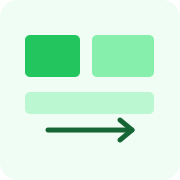
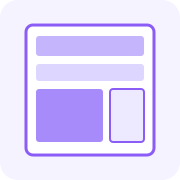

1. Box Element
Elemen HTML dapat dianggap sebagai kotak yang terdiri atas content, padding, border, dan margin. Keempat bagian ini menentukan area isi, ruang dalam, garis tepi, dan jarak luar elemen.
Properti box-sizing: border-box membantu menjaga lebar elemen tetap mencakup padding dan border.
2. CSS Float dan Clear

float: left atau float: right menempatkan elemen ke salah satu sisi. Sementara itu, clear: left, clear: right, atau clear: both mencegah elemen berada di samping float pada sisi terkait.
3. HTML Semantik

Tag seperti header, nav, main, section, article, aside, dan footer memberi arti yang lebih jelas pada bagian halaman dan memudahkan pemeliharaan kode.